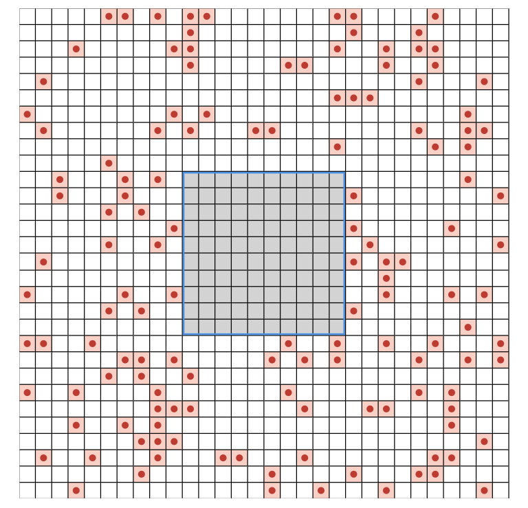

Thank you for participating in this study!
Please do not refresh this page during the experiment.
Please enter your Prolific ID here
To make sure you understand the instructions, now please indicate whether each of the following statements is true or false. The following explanation is just to make sure you can fully understand the verbs.
Your job is to inspect the central area by clicking on squares and then decide how much to invest in building on it.
On each trial, you can inspect up to 10 squares. If the central area is cleared land, your investment will generate a good return proportional to the amount invested. If it is uncleared land, you will lose all the funds invested.
Each trial is independent. The type of land, the distribution of mines (if any), and the available investment funds are determined independently for each new trial.
The rule indicates that the more confident you are that the entire central area is mine-free, the greater the proportion you should invest.
Inspected: 0 / 10 squares
Click on a square in the central area to inspect it.
Well done! You have finished the main task!
Feedback on one or some of the following questions: How did you work out the answers? What did you find particularly easy/hard? Did you have a strategy, if so what was it? Did you spot any bugs or errors? (optional)
Please answer the following questions about yourself to complete the experiment:
1. Age *: years
2. Gender *:
Thank you very much!! Data have been saved.
Click here to redirect to Prolific."
Sorry, it seems that your network cannot connect to our database successfully. You need to upload the data manually.
Step 1:
Click here to save your data (Inference.json) to your computer (you might need to wait a few seconds after clicking).
(Json is a common and safe file type developed under web languages. It is used to save data just like txt,csv. It can help us to merge your data with other participants later easily.)
Step 2:
Upload the file via this Qualtrics form.